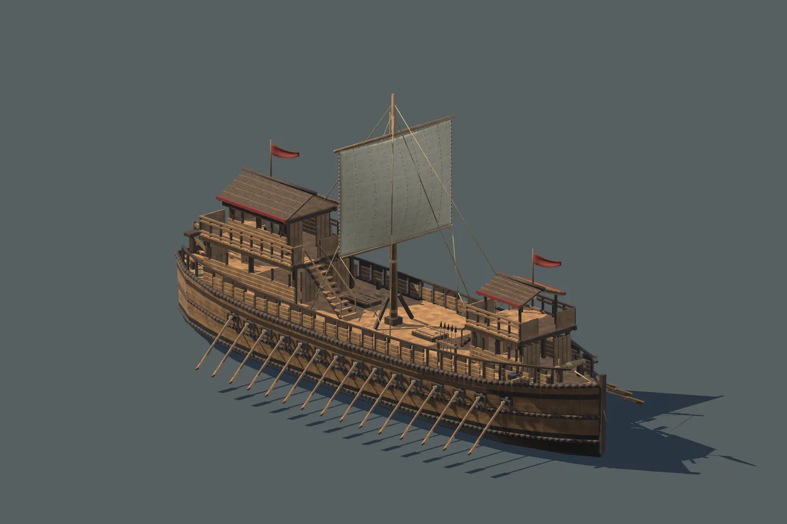
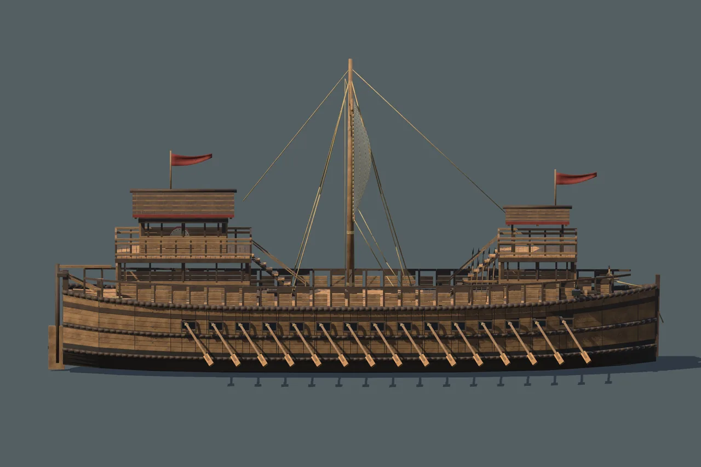
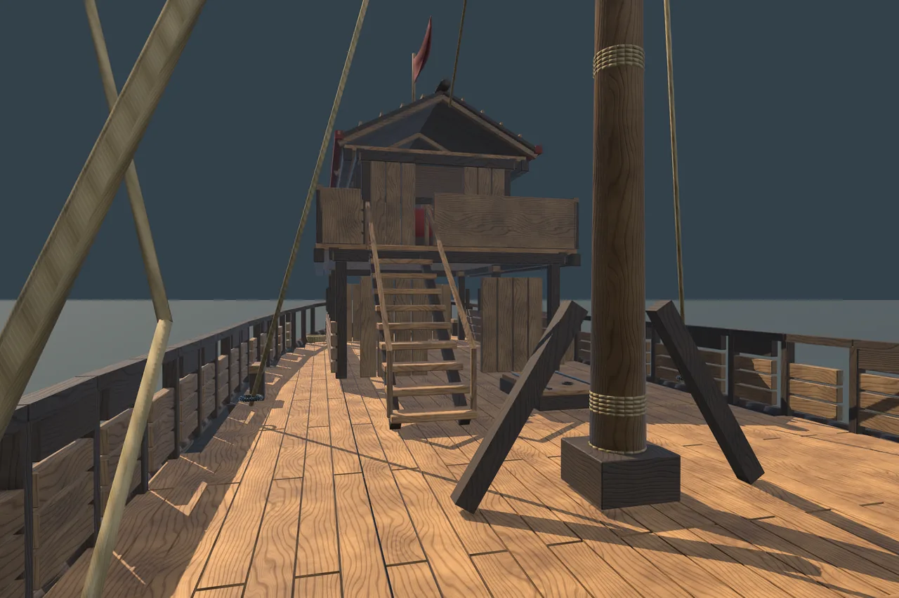

Han River Warship
A silhouette built for the river.

A silhouette built for the river.
A timber river vessel with a raised command structure, fighting platform, removable main sail and thirty individually pivoted oars.
58 separable modules
3 vessel assemblies
5 sample scenes
Local technical candidate · Not listed on the Asset StoreA closer look
Select an image to explore




Inside the project
One ship with full-sail, no-main-sail and stationary collision assemblies. A fixed-deck walking sample supports close exploration. Nominal hull length is 33 metres with an 8.4 metre beam.
Tested configuration
Unity 6000.6.0f1
Universal Render Pipeline 17.6.0
Windows · Direct3D 11 · Linear
Other Unity versions, render pipelines and platforms have not been verified. No target frame rate is promised.
Scope & limitations
A stationary environment asset, without buoyancy, sailing, rowing or rudder animation, cloth simulation, crew, combat or playable lower hold. No LODs, NavMesh or baked lighting. Demo water is a flat opaque plane.